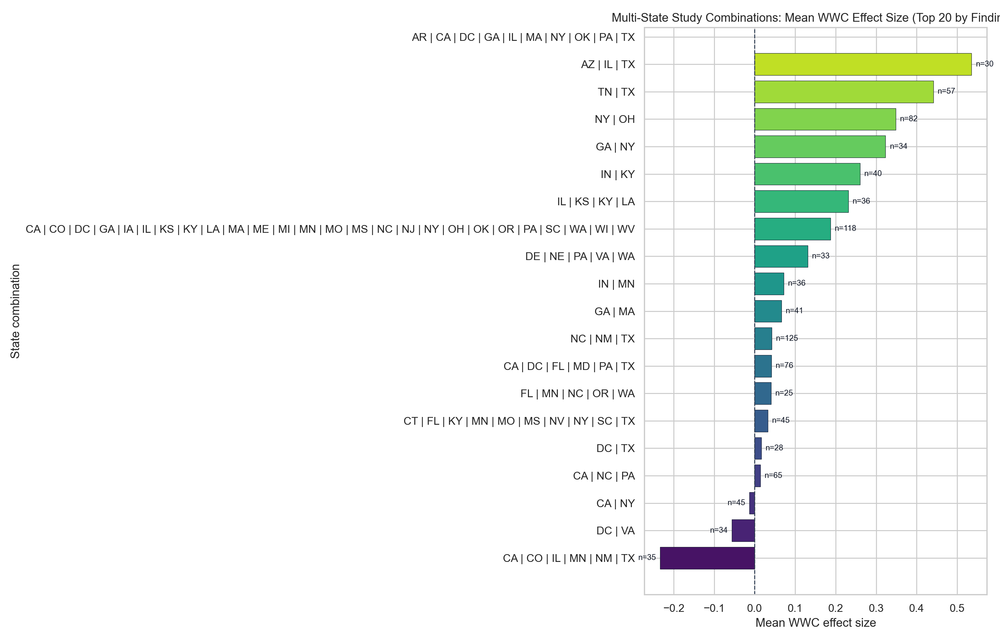
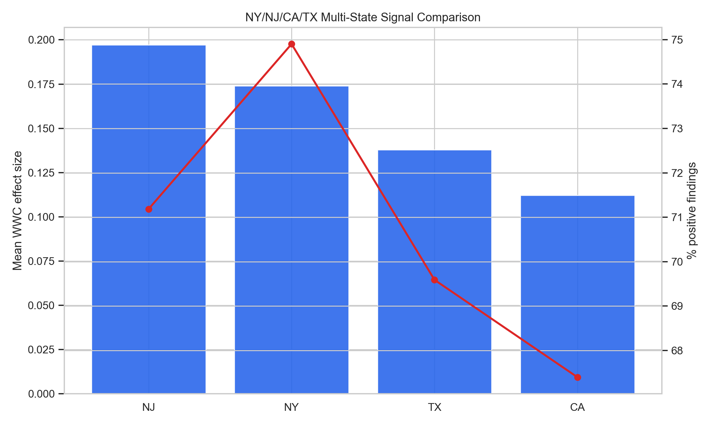
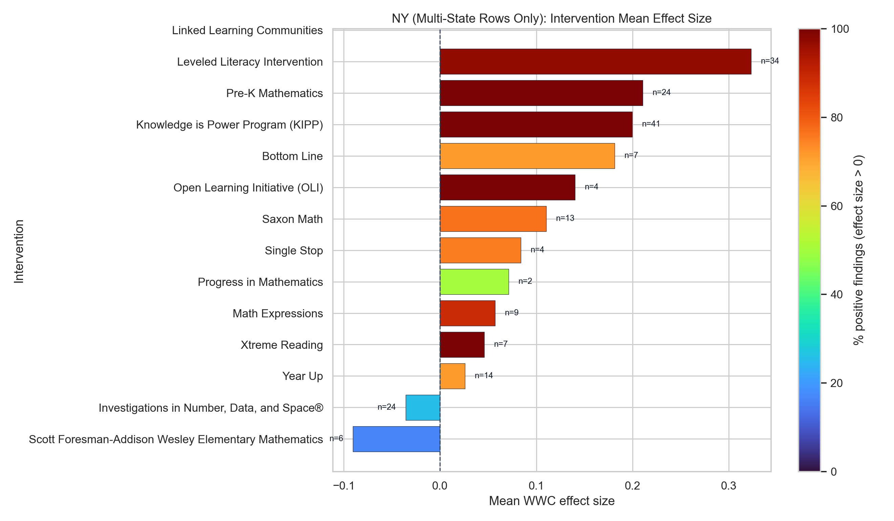
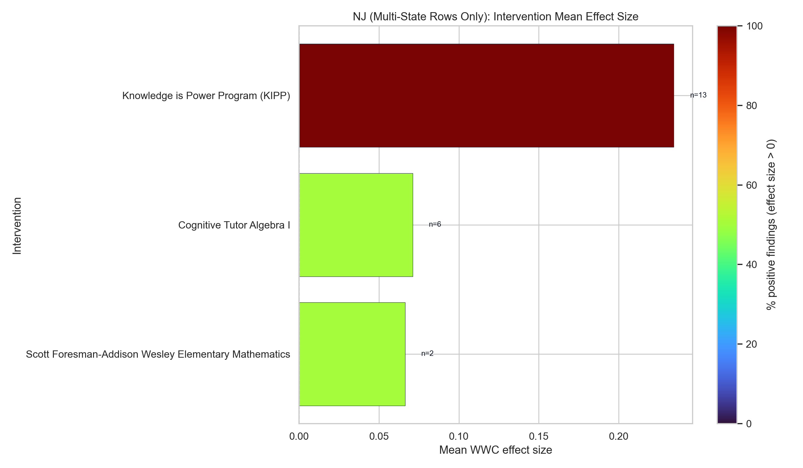
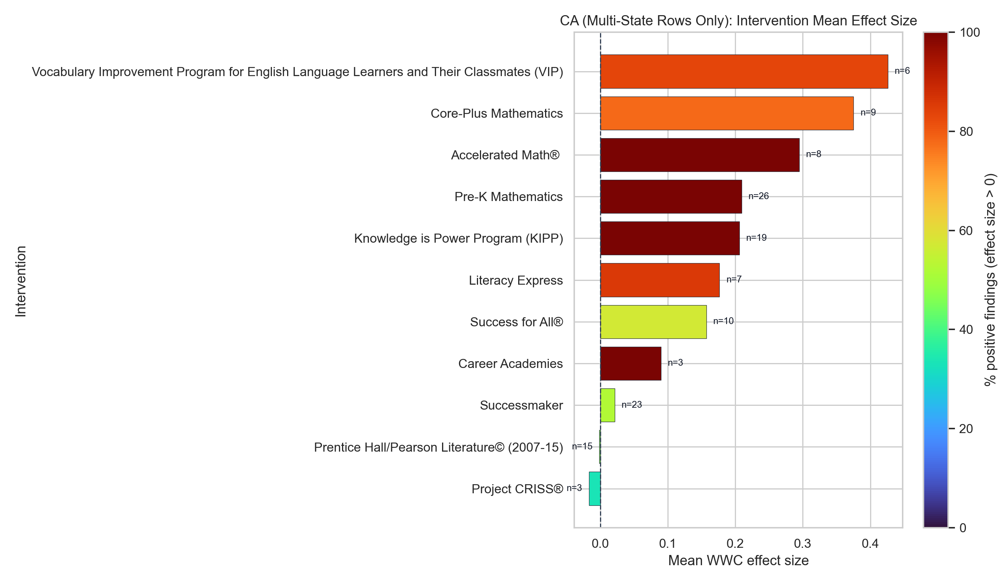
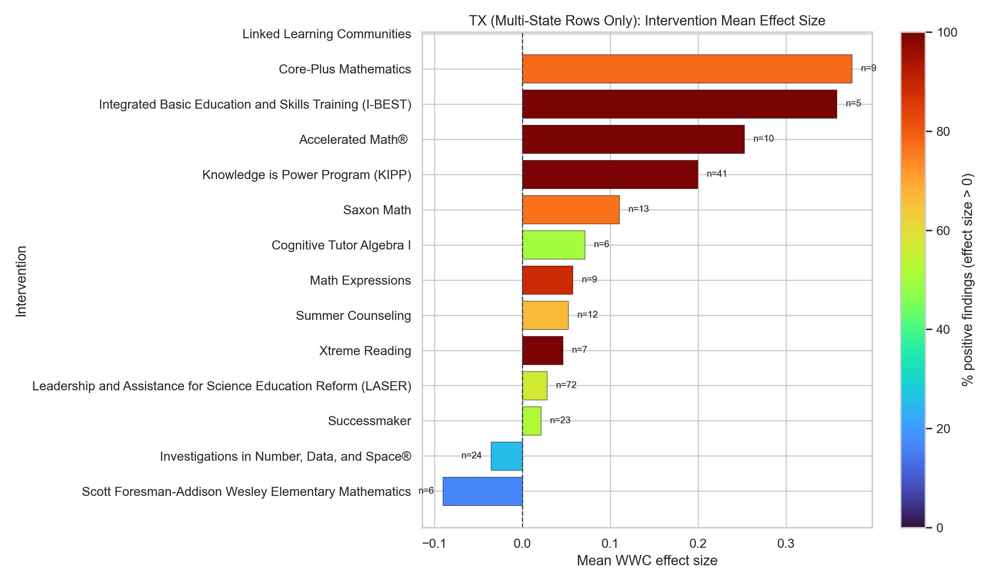

Rows were filtered to studies/findings with 2+ states and then split by state membership so NY/NJ/CA/TX are analyzed separately.
| state_abbr | state_name | findings_n | studies_n | interventions_n | mean_effect_size_wwc | median_effect_size_wwc | pct_positive_effect_size | mean_improvement_index |
|---|---|---|---|---|---|---|---|---|
| NY | New York | 820 | 53 | 18 | 0.174 | 0.109 | 74.901 | 6.446 |
| NJ | New Jersey | 216 | 21 | 5 | 0.197 | 0.136 | 71.186 | 7.076 |
| CA | California | 1000 | 83 | 23 | 0.112 | 0.060 | 67.399 | 4.943 |
| TX | Texas | 1067 | 85 | 23 | 0.138 | 0.078 | 69.590 | 4.977 |
| state_combo | findings_n | studies_n | interventions_n | mean_effect_size_wwc | median_effect_size_wwc | pct_positive_effect_size | mean_improvement_index |
|---|---|---|---|---|---|---|---|
| AR | CA | DC | GA | IL | MA | NY | OK | PA | TX | 176 | 1 | 0 | NaN | NaN | NaN | 8.824 |
| NC | NM | TX | 125 | 3 | 1 | 0.042 | 0.044 | 64.000 | 1.696 |
| CA | CO | DC | GA | IA | IL | KS | KY | LA | MA | ME | MI | MN | MO | MS | NC | NJ | NY | OH | OK | OR | PA | SC | WA | WI | WV | 118 | 1 | 0 | 0.187 | 0.150 | 69.307 | 7.050 |
| NY | OH | 82 | 1 | 0 | 0.349 | 0.172 | 71.951 | 8.512 |
| CA | DC | FL | MD | PA | TX | 76 | 3 | 1 | 0.042 | 0.044 | 72.727 | 1.677 |
| CA | NC | PA | 65 | 2 | 0 | 0.014 | 0.012 | 56.364 | 0.545 |
| TN | TX | 57 | 11 | 0 | 0.442 | 0.498 | 94.737 | 16.544 |
| CT | FL | KY | MN | MO | MS | NV | NY | SC | TX | 45 | 3 | 4 | 0.033 | 0.020 | 57.576 | 0.133 |
| CA | NY | 45 | 7 | 1 | -0.013 | 0.104 | 83.871 | 6.205 |
| GA | MA | 41 | 2 | 1 | 0.067 | 0.128 | 80.000 | 3.024 |
| IN | KY | 40 | 3 | 0 | 0.260 | 0.257 | 90.000 | 10.025 |
| IL | KS | KY | LA | 36 | 1 | 1 | 0.231 | 0.237 | 80.000 | 8.850 |
| IN | MN | 36 | 1 | 0 | 0.072 | 0.115 | 81.250 | 2.875 |
| CA | CO | IL | MN | NM | TX | 35 | 2 | 0 | -0.234 | -0.216 | 5.714 | -10.971 |
| DC | VA | 34 | 2 | 0 | -0.056 | -0.061 | 0.000 | -0.419 |





